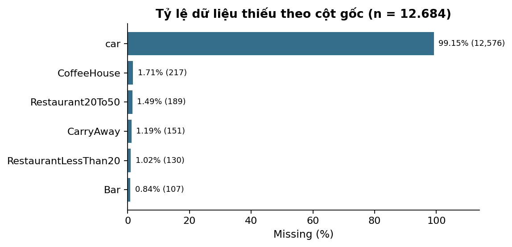
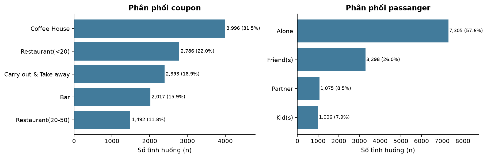

12.684 × 26
Kịch bản lái xe giả định (MTurk)
56,84%
Ý định nhận Y=1 (7.210 / 12.684)
99,15% / 1,29%
Thiếu ở car / matched_frequency
567 người
Respondent ID suy ra (86,2% có 22 dòng)
Đặc điểm thu thập & quy ước xử lý
- Nguồn gốc: Wang et al. (2017, JMLR), khảo sát tình huống giả định trên Amazon Mechanical Turk —
Y=1là ý định, không phải giao dịch thật. - Kiểm tra logic: 0 vi phạm cờ
GEQ25 ⇒ GEQ15 ⇒ GEQ5vàdirection_same + direction_opp = 1;toCoupon_GEQ5minlà cột hằng (=1). - Không xóa NaN máy móc: Giữ nguyên 12.684 dòng ở bản phân tích chính (74 dòng trùng lặp chỉ chiếm 0,58%, được kiểm tra độ nhạy riêng).
- Ràng buộc thiết kế mẫu:
7AMgắn 100% vớiWork;Friend(s)chỉ xuất hiện ởNo Urgent Place(0 dòng ởHome/Work).
Khác biệt so với các notebook công khai
- Kiểm soát confounder có hệ thống (D4) thay vì chỉ đọc bảng gộp thô.
- Đo bất định bằng Wilson / bootstrap CI 95% (D5) và sensitivity analysis (D6).
- Tách train/test theo
respondent_idgiả định để chống rò rỉ dữ liệu ở Q6.

Tỷ lệ dữ liệu thiếu theo cột gốc (n = 12.684)

Phân phối loại coupon và nhóm người đồng hành (passanger)